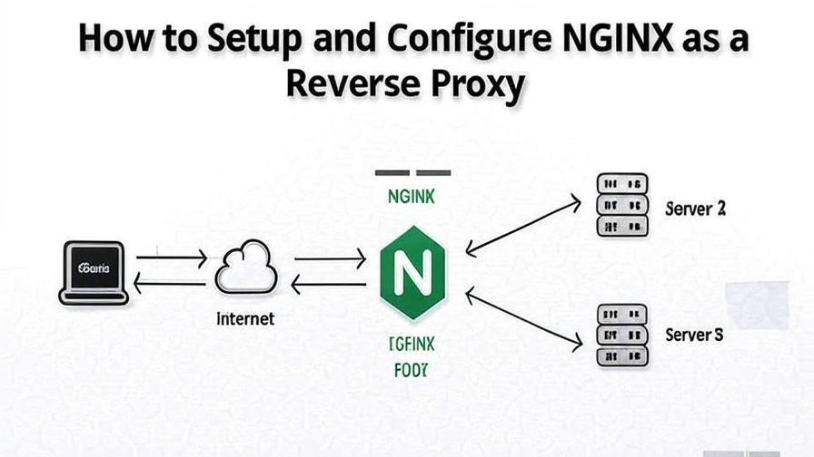

💻 Vous codez ? Alors vous avez sûrement déjà croisé Nginx
13 Mai 2025, 16:43 CEST
Compute
Et si vous ne l’avez pas encore exploré, voici pourquoi il est incontournable.
Le serveur web discret mais puissant
Besoin de lancer un site frontend ?
Que ce soit sur EC2 ou ailleurs, une bonne config nginx.conf suffit à servir vos fichiers statiques directement au navigateur.
Simple, rapide, efficace.
Et pourtant, ce n’est que la surface de ce que Nginx peut faire.
Proxy inverse : le chef d’orchestre invisible
Frontend prêt ? Place au backend.
Nginx devient alors un proxy inverse :
Il reçoit toutes les requêtes → les redirige au bon service → renvoie la réponse à l’utilisateur.
Comme au restaurant : vous parlez au comptoir, pas au chef.
Mais c’est le chef qui cuisine.
Résultat :
Le backend reste invisible
Moins d’exposition aux attaques
Plus de clarté dans l’architecture
Équilibrage de charge : scaler sans paniquer
Quand le trafic explose, un seul serveur ne suffit plus.
Nginx répartit les requêtes sur plusieurs machines.
Round Robin, IP hash, Least Connections… vous choisissez votre méthode.
C’est comme avoir plusieurs caisses ouvertes dans un supermarché.
Moins d’attente, plus d’efficacité.
Compression Gzip : plus léger, plus rapide
Vos pages prennent du poids avec le temps ?
Nginx compresse à la volée vos fichiers HTML, CSS, JS.
Moins de données = plus de vitesse = meilleure UX.
Attention : pour les images/vidéos → utilisez un CDN.
Conclusion : Nginx, votre couteau suisse backend
Serveur web, proxy inverse, load balancer, compresseur...
Tout ça dans un seul fichier de config.
La vraie question :
Avez-vous déjà écrit un nginx.conf vous-même ?
Si non, c’est le moment d’essayer.
Vous comprendrez vite pourquoi il est au cœur de tant d’architectures modernes.
🔁 Repostez si vous pensez que tout dev devrait comprendre Nginx.
P.S. Votre rôle préféré de Nginx ?